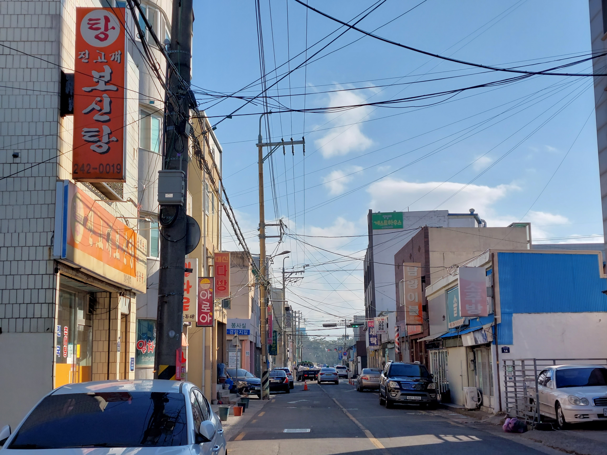

Some people once lived this world left their senses, breathing on the surface.
For every breathe, we left our thoughts on the object which we are looking at. Those objects would be really normal and daily things because we don't have so much special times. We are living in normal for most of our time. But whether we realize it or not, we are giving our love and sense of living to the objects, and people.
